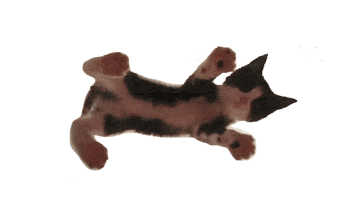

Interesting Facts about Cats!
There are over 500 million domestic cats in the world.


- Cats are one of, if not the most, popular pet in the world.
- There are over 500 million domestic cats in the world.
- Cats and humans have been associated for nearly 10000 years.
- Cats conserve energy by sleeping for an average of 13 to14 hours a day.
- Cats have flexible bodies and teeth adapted for hunting small animals such as mice and rats.
- Domestic cats usually weigh around 4 kilograms (8 lb 13 oz) to 5 kilograms (11 lb 0 oz).
- The heaviest domestic cat on record is 21.297 kilograms (46 lb 15.2 oz).